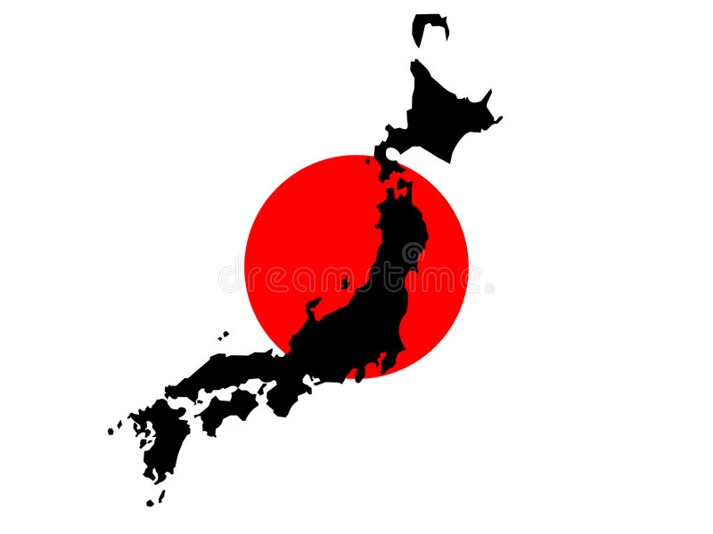

SDB
Surgimento do Drift
Drift ou Drifting (ドリフト走行 dorifuto sōkō?), é uma técnica de direção de carros que consiste em deslizar nas curvas escapando a traseira, girar o volante para que as rodas dianteiras estejam sempre em uma direção oposta a curva (se o carro vira para a direita então a roda deve estar a esquerda, e vice versa), controlando o nível de derrapagem, fazendo o carro literalmente andar de lado

Criador do Drift
Kunimitsu Takahashi (Shinjitai: 高橋 国光 Takahashi Kunimitsu?, Tóquio, 29 de janeiro de 1940 – 16 de janeiro de 2022)
Foi um ex-motociclista e automobilista do Japão, que também é considerado o "pai do drifting". Ele foi o presidente do GT-Association, os organizadores da Super GT series, que teve o cargo entre 1993-20 07.
Como surgiu o Drift
O drifting moderno começou há 30 anos no “All Japan Touring Car Championship races”. Tendo como criador da técnica o piloto japonês, Kunimitsu Takahashi, em 1970, que ficou famoso batendo seu “apex” (ponto onde o carro está mais próximo da curva) em alta velocidade, deslizando na curva e saindo dela com mais velocidade que o normal. Após essa grande façanha ele ganhou inúmeros fãs que deram início ao drifting japonês. Muito tempo depois da sua criação o drifting chegou ao Brasil, só começou a ganhar destaque com a popularização do tuning e a chegada de jogos e filmes relacionados. O drift se tornou uma paixão para os brasileiros que curtem aventura e alta velocidade, tanto que está previsto para o primeiro semestre de 2007 o I Campeonato Brasileiro de Drifting.
 FD-Fórmula
D
FD-Fórmula
D SDB- Super Drift Brasil
SDB- Super Drift Brasil FD- Formula
Drift
FD- Formula
Drift